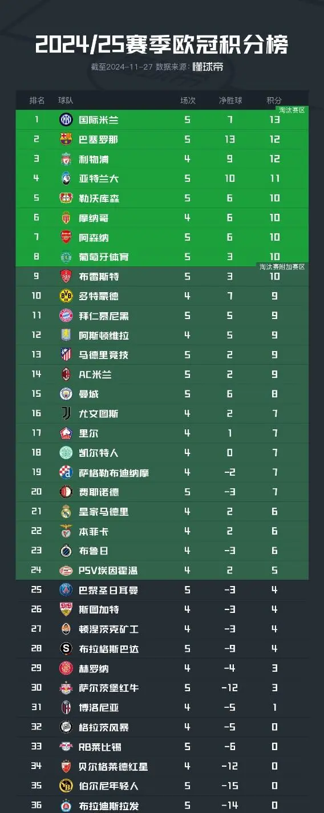

巴塞罗那足球队目前比赛状况
联赛比赛情况
在当前赛季的欧冠联赛中，巴塞罗那整体表现可圈可点。
截至目前，
已经完成5轮比赛，目前的战绩为4胜、0平、1负，凭借12分，处于第二。
在进攻方面，欧冠赛场上巴塞罗那大胜而归，队中莱万等球员有着亮眼发挥，屡次撕开对手防线制造得分机会。

球队状态与后续展望
从整体状态来看，巴塞罗那队目前正处于磨合上升期，球队内部正在积极调整战术、磨合阵容，争取在后续比赛中取得更好的成绩。
教练团队方面，弗利克教练正致力于解决当前球队存在的问题，尝试不同的战术布置与人员轮换，期望激发出球队最大的潜力。
球员伤病情况也对后续比赛有一定影响，目前队中有德容等球员处于伤病复出状态，他们的伤病在一定程度上影响了球队的阵容完整性和战术选择，不过其他球员也在积极补位，争取弥补他们缺阵带来的损失。
展望后续比赛，巴塞罗那在联赛中将要面对一众强队，球队需要做好充分准备，在攻防两端都拿出更好的表现，争取在各项赛事中都能走得更远。